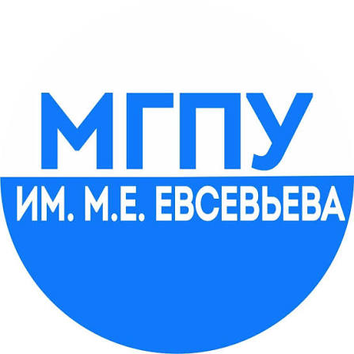
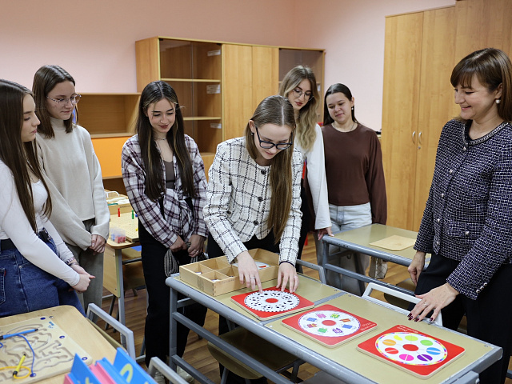
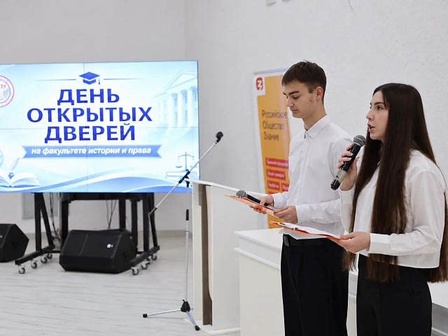
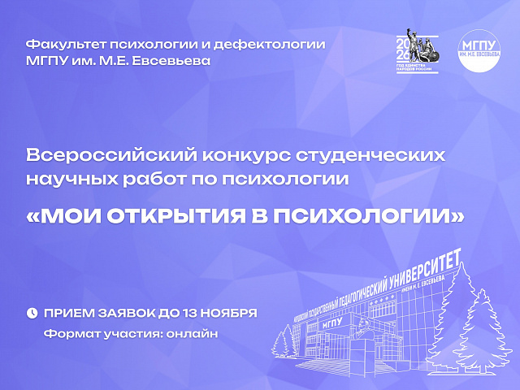

Платформа MathVizor
Веб-приложение для математического эксперимента: от постановки задачи до рефлексии — в одном рабочем пространстве.
Непрерывный цикл исследования
- Постановка задачи
- Модель
- Эксперимент
- Объяснение
- Рефлексия
Каждая группа цифровых ресурсов решает собственную задачу, но не обеспечивает непрерывности этого цикла. MathVizor объединяет все пять этапов в одной среде.
Рабочий лист
Слева — условие задания и инструменты визуализации, в центре — график или геометрическая конфигурация, справа — панель пошагового решения. Обучающийся изменяет параметры ползунками, формулирует гипотезу и проверяет её вычислениями.
Преподаватель видит задачу в режиме мониторинга и может отправлять подсказки.

Образовательная среда университета
Разработка создаётся в среде педагогического технопарка, где объединены естественно-математические дисциплины, информационные технологии и методики обучения. Ниже — фотографии с официального сайта МГПУ им. М. Е. Евсевьева (mordgpi.ru).



Четыре модуля платформы
Визуализация
Графики функций и динамические модели с изменением параметров.
Вычисления
Пошаговые преобразования с подсказками и объяснениями.
Практика
Индивидуальные задания с учётом типа ошибок.
Аналитика
Сводка действий и типичных затруднений для преподавателя.
Компоненты и педагогические задачи
| Компонент | Педагогическая задача | Ожидаемый эффект |
|---|---|---|
| Модуль визуализации | Перевод абстрактного объекта в наглядную форму | Развитие функционального мышления |
| Символьный решатель | Демонстрация логики преобразований | Понимание структуры алгоритма |
| Адаптивные задания | Индивидуализация темпа и сложности | Рост учебной мотивации |
| Журнал действий | Выявление типичных затруднений | Адресная корректировка работы |